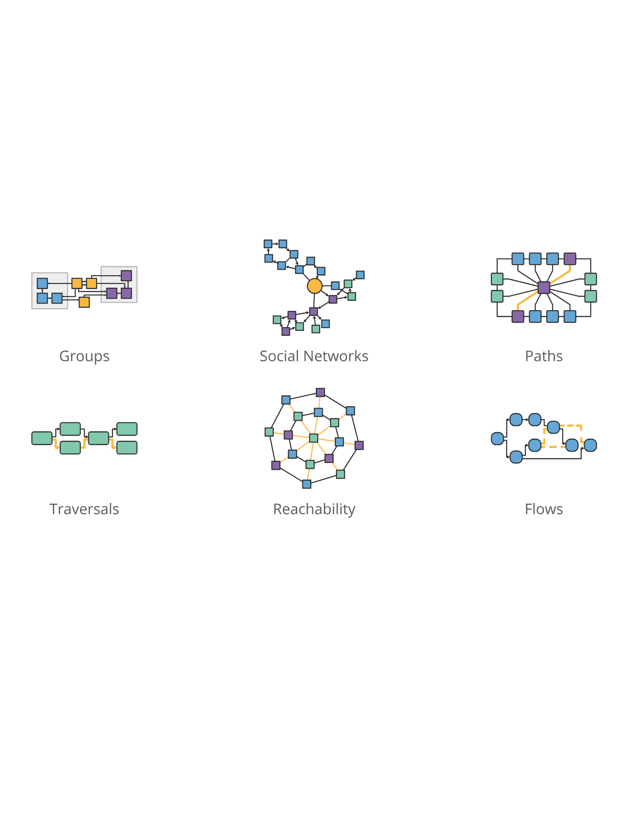
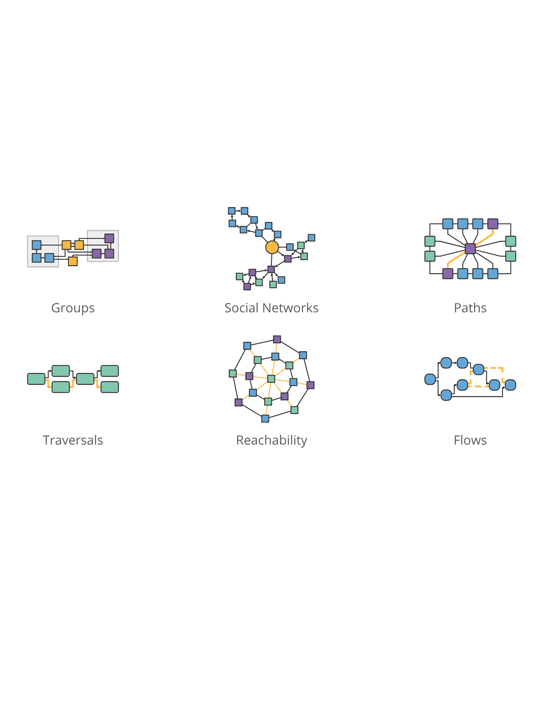

What is Entropy?
Imagine your bedroom right after you’ve cleaned it: your bed is made, your desk is organized, and your clothes are neatly put away. This is a low-entropy state because there are very few ways to arrange the room without creating disorder. In contrast, there are countless messy arrangements. Systems naturally tend to move toward these more disordered states simply because they are far more numerous. Entropy measures the amount of disorder or uncertainty in a system. More precisely, it counts the number of microscopic configurations (microstates) corresponding to the same overall condition (macrostate). Since disordered configurations vastly outnumber ordered ones, systems tend to evolve from low-entropy (ordered) to high-entropy (disordered) states.

Low Entropy

Higher Entropy

Highest Entropy
Why Graphs?
Many real-world systems (epidemics, social networks, the internet, physical processes) exhibit entropy. Measuring that entropy helps us understand and predict their behavior. But these systems are too complex to model with continuous equations alone. By discretizing them and applying linear algebra techniques, we can study them more effectively. Graph theory provides a natural framework for this discretization: we represent complex systems as networks of vertices and edges and analyze their structure using matrices.
 

Example: Von Neumann Entropy of the Cycle Graph C₄
Step 1: Define the graph Γ = C₄.
Step 2: Compute the degree matrix D.
Step 3: Compute the adjacency matrix A.
Step 4: Compute the Laplacian L = D − A.
Step 5: Normalize: ρ = L / Tr(L).
Step 6: Compute S(ρ) = −Tr(ρ log ρ).
D = diag(2, 2, 2, 2)
A =
[0 1 0 1
1 0 1 0
0 1 0 1
1 0 1 0]
L = D − A =
[ 2 −1 0 −1
−1 2 −1 0
0 −1 2 −1
−1 0 −1 2]